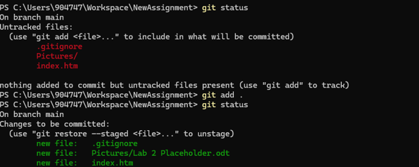
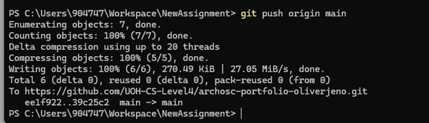
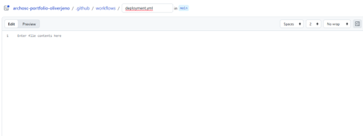
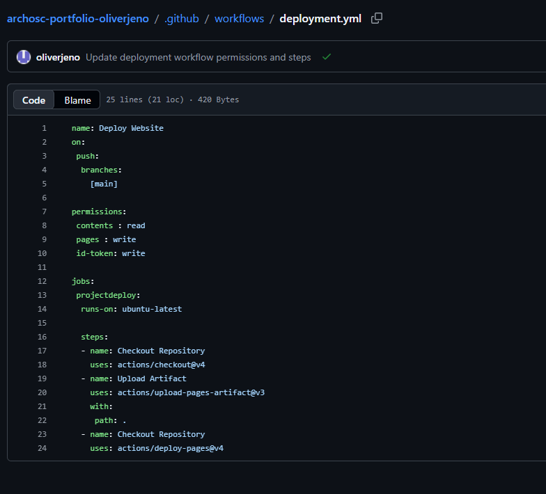

I used my skill I learnt from my prior lab to pull pulled my work from GitHub into the original folder I made for my assignment and copied and pasted that into my new work folder as a new GitHub classroom repository was made for the coursework.


I first went to my pages section in GitHub and unpublished the site I then pressed the dropdown button under source and chose GitHub actions. I then went to the actions section on the main page and created a new work flow. I then chose to write my own pipeline. Finally I changed the name from “main.yml” to “deployment.yml”.

With help from document I then wrote some YAML. Firstly I set the set the name to be “Deploy Website” the name itself can be anything however its important that its clear. With the second part telling GitHub action to run every time I push to the main branch. To spin up the VM in future labs I then added a jobs commands, with the “projectdeploy” naming the list of jobs to do. With the runs on command telling us the specific type of virtual machine we will be running on. Since we will be working on a virtual machine with only operating system installed we will need to add GitHub action called “checkout” so the machine can be worked on. Then permission need to be a added that allows the pipeline to read and write my repository. The artifact section commits it to memory allowing so it can be used throughout the workflow. Finally deploy to GitHub pages is used to it can be deployed.

I linked my website pages together using hyperlinks. I created links from the homepage to my Lab 2 and Lab 3 pages and added links between Lab 2 and Lab 3 as well as links back to the homepage. This makes it easy for people to navigate between all of the pages i will use.